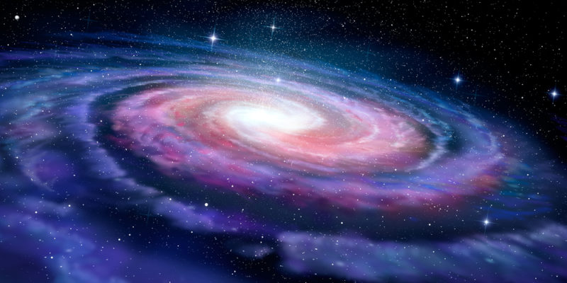
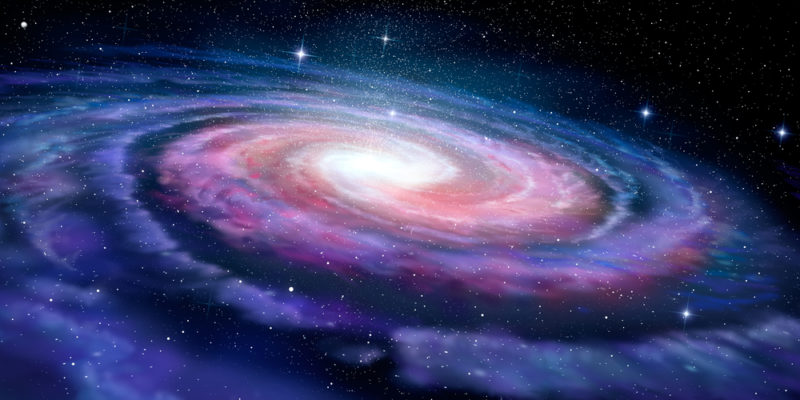

| Nombre | Descripción | URL | Logo |
|---|---|---|---|
| Galaxias | Ques es una Galaxia? | Galaxia |  |
| Componente | Componentes del universo | Componentes | |
| Materia Oscura | Materia Oscura | Materia Oscura | < |
Lee con atención
| Universo | Galaxias | Planetas | Agujeros negros | Origen de la materia |
| 100 | 10 | 1000 | 100 | 10 |
| 1000 | 1000 | 100 | 10 | 1000 |
Datos Interesantes
| El tamaño del universo es de 93.000 millones de años luz | 225 millones de años tarda el sol en dar una vuelta alrededor de la Vía Láctea | El lugar más frío del universo es la Nebulosa Boomerang, que está a una temperatura de -272 °C | Existe un exoplaneta cubierto de hielo ardiente, pero está a 33 años luz de distancia de la Tierra | Se estima que diariamente nacen 275 millones de estrellas |
|---|---|---|---|---|
| El Monte Olimpo es el volcán más alto del sistema solar, está en Marte y tiene una altura de 22.5 kilómetros | Saturno podría flotar en el agua debido a su baja densidad y porque tiene una atmosfera de hidrógeno | un d&ioacutaa en Venus equivale a 243,0226 en la Tierra | 55 Cancri e: así se llama el planeta que está formado por diamante y tiene el doble de tamaño que la Tierra | Algunas estrellas pueden vivir hasta 200.000 millones de años |
| Podría existir dos millones de millones de galaxias y tendrían entre 3.000 y 300.000 años luz de diámetro | La luz del Sol llega a la Tierra después de 8 minutos y 17 segundos | La Tierra cada año gira más lento, en concreto son 17 milisegundos debido a la fricción que produce la Luna | Si la Tierra se comprimiera al tamaño de una espera de 8 milímetros de radio o una canica, se convertiría en un agujero negro | El planeta HD 189733 b, que fue descubierto en el 2005, tiene la particularidad de que llueve vidrio |
| Nombre | Descripción | URL | Logo |
|---|---|---|---|
| Galaxias | Ques es una Galaxia? | Galaxia |  |
| Componente | Componentes del universo | Componentes | |
| Materia Oscura | Materia Oscura | Materia Oscura | < |